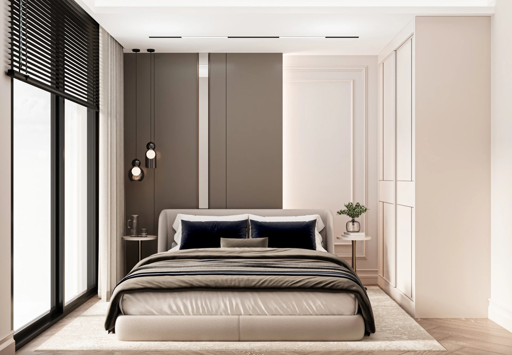
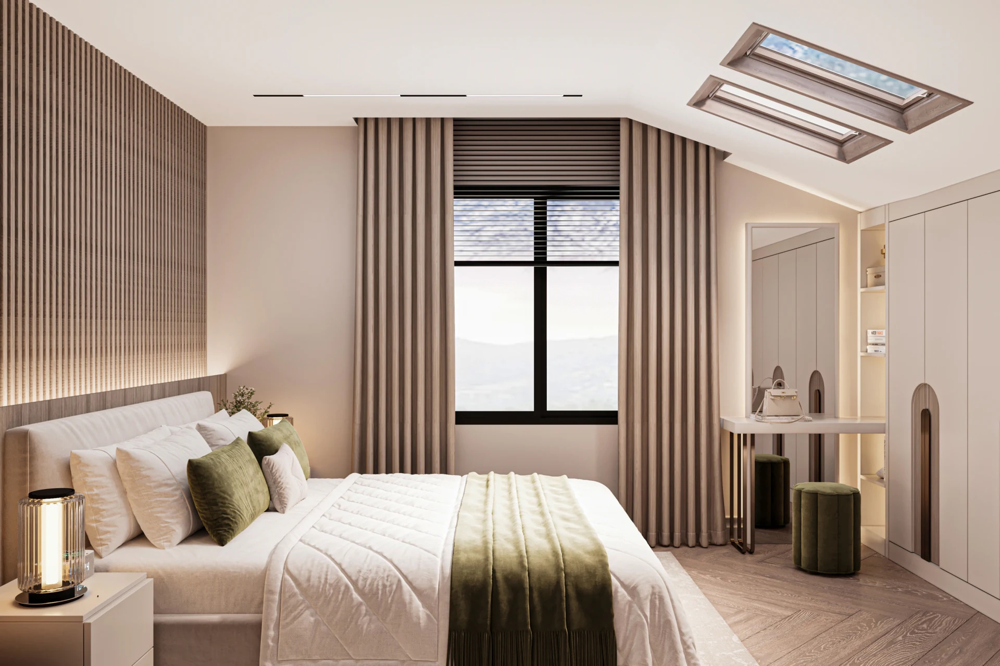

Tufan Properties
Center Garden
Babatasi, Fethiye

A small project with four apartments and two commercial units. The developer describes private gardens for the apartments.
01 / The project in images
Explore the spaces.
Selected original views from the developer’s project gallery.




02 / Project details
Babatasi, Fethiye
Construction started · planned completion September 2027. Source checked 6 October 2026; availability and dates require developer confirmation.
Your sales contact, in the same place
This example is not accepting enquiries. A published presentation includes the contact details and enquiry links you approve.